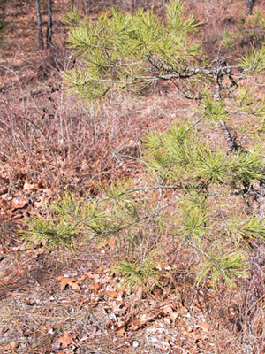

Previous || Next || Return to Mystery Plants || USC Herbarium
This Week's Mystery Plant | Dr. John B. Nelson Curator, USC Herbarium |
|
Here's a tree that grows in Sims Park, not far from my house, in Shandon. It's a common native species, and can be seen all over Columbia, and for that matter, just about anywhere in South Carolina, though perhaps most commonly in the piedmont counties. It grows on high-ground sites, as it doesn't like to have its feet very wet. Elsewhere, it is widespread in the southeast, extending north to New York (barely) and then over to eastern Oklahoma and Texas. It is a pine, rather obviously, so there's not much mystery there. But which one? There are ten different pines that are native to our state. This one is potentially a large, stately tree, to 100' tall, and is valued as an excellent source of lumber, plywood, and pulp, although it is not grown in extensive plantations as are loblolly and slash pine. Its needles are fairly short (4" or so) when compared to most of its relatives. Like all pines, it will produce male and female cones on the same branch. The male cones produce pollen. The female cones are the source of the winged seeds…and they are sometimes called "seed" cones. The seed cones of this pine are pretty small, again compared to other pine species. Each of the woody scales on the seed cone comes with a sharp point, so the whole cone is quite prickly. (In fact, the scientific name of this species can be translated as "prickly pine".) Another mystery presents itself here: way up in the top of the tree, you can clearly see a portion of growth which is especially compact and dense, with unusually crowded needles. This is a "witch's broom," an unusual and bristly growth form that may be the result of an injury to the tree, or possibly an infestation of a parasite. Witch's brooms occur in many conifers, as well as in various broad-leaved trees. They are sometimes prized in horticulture as curiosities. |
 Photo by Linda Lee |